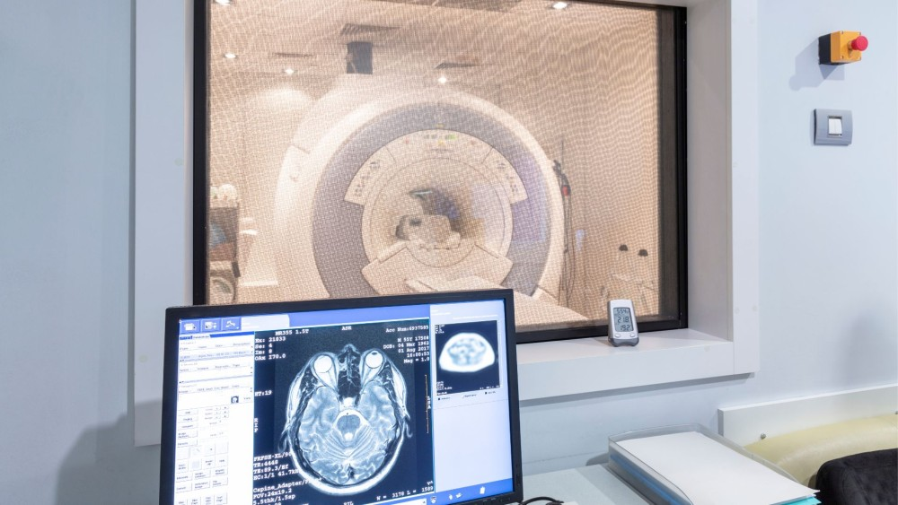
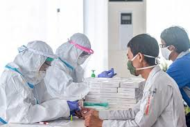
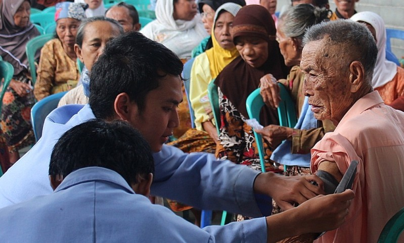
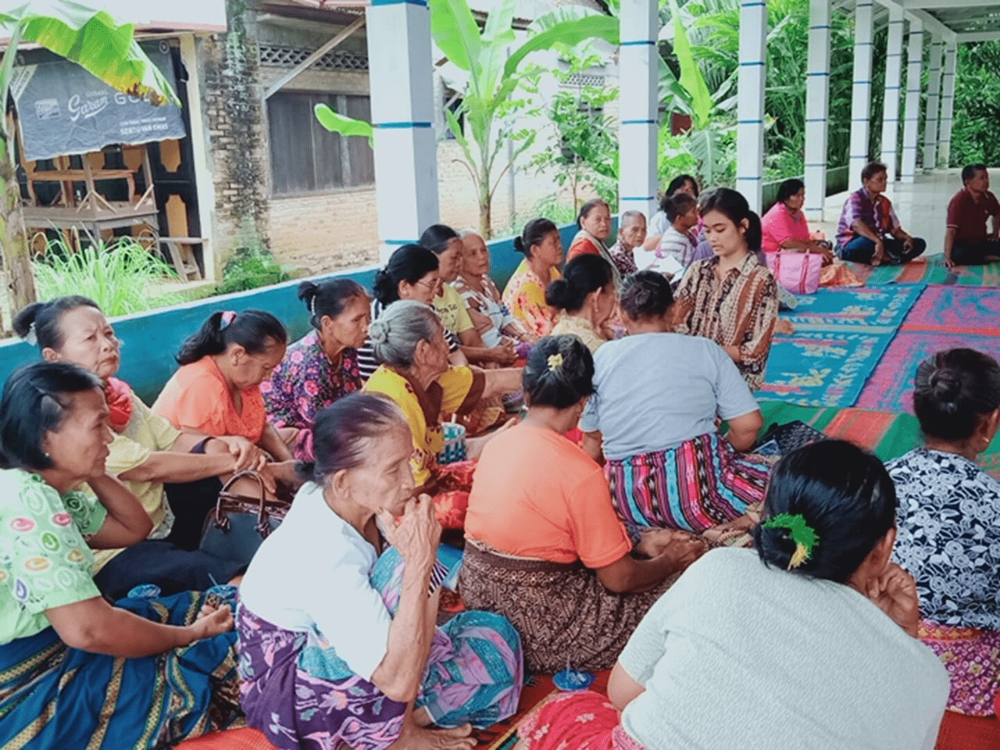
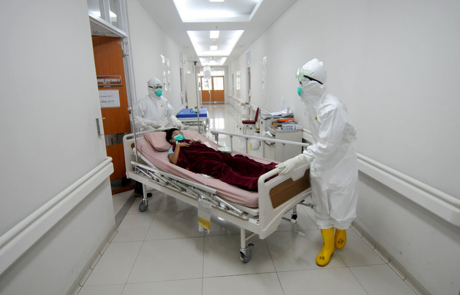
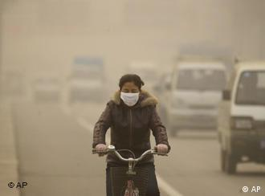

7 Bidang Kerja Sama Indonesia–Jepang
Pada 19 Oktober 2020, Menteri Kesehatan RI Terawan Agus Putranto dan Duta Besar Jepang untuk Indonesia Ishii Masafumi menandatangani Memorandum of Cooperation (MoC) bidang kesehatan secara virtual sebagai landasan kerja sama Indonesia–Jepang di 7 bidang kesehatan. Kesepakatan ini lahir setelah pembahasan sejak 2017 dan kemudian dilanjutkan dengan kunjungan-kunjungan kerja teknis, misalnya pertemuan Wamenkes RI di Tokyo dan Osaka untuk menindaklanjuti pelatihan tenaga kesehatan, hibah alat kesehatan (seperti mobile X‑ray dan obat antivirus), serta penguatan laboratorium penyakit menular.
7 kesepakatan antara lain:
Farmasi & Alat Kesehatan 🏥
Penyelenggaraan Indonesia–Japan Pharmaceutical and Medical Devices Business Forum di Osaka sejak 2022 yang mempertemukan ratusan pelaku industri dari kedua negara untuk kolaborasi riset, co-production, dan transfer teknologi. Pemerintah menargetkan kemandirian dengan memproduksi 6 dari 10 bahan baku obat (API) secara lokal dan meningkatkan porsi produksi alat kesehatan dalam negeri, sementara Jepang memberikan dukungan investasi, kemitraan industri, dan kemudahan uji klinis agar Indonesia bisa lebih mandiri menyediakan obat, vaksin, dan alat medis berkualitas bagi masyarakat
Pengembangan SDM Kesehatan 👩⚕️
Program pengiriman ratusan perawat Indonesia ke Jepang tiap tahun melalui skema EPA dan SSW yang disertai pelatihan bahasa serta kompetensi klinis. Selain itu, Kemenkes dan mitra Jepang menyelenggarakan pelatihan regulator alat kesehatan, kursus perawatan lansia (kaigo), serta training dokter dan fisikawan medis RS Kanker Dharmais di pusat terapi proton Jepang untuk menyiapkan layanan kanker berteknologi tinggi di Indonesia.
Pelayanan Kesehatan Umum 🚑
Rumah Sakit Jantung dan Pembuluh Darah Harapan Kita bekerja sama dengan Tokushukai Medical Group Jepang untuk membangun gedung layanan kardiovaskular 22 lantai dengan dukungan hibah sekitar 10 miliar yen, yang akan menambah kapasitas tempat tidur dari 400 menjadi 750 dan menaikkan jumlah tindakan operasi dari 5.000 menjadi sekitar 7.000 kasus per tahun. Di bidang kanker, RS Kanker Dharmais menjalin sister-hospital dengan Medipolis Proton Therapy and Research Center Jepang untuk menghadirkan layanan terapi proton beam, termasuk kunjungan tim dokter dan fisikawan medis Indonesia ke Jepang serta rencana pengiriman tenaga ahli secara berkala.
Teknologi Informasi Kesehatan 💻
Penerapan platform rekam medis digital dan telemedicine hasil kerja sama Jepang. Inovasi smart hospital dan pengembangan sistem pemantauan penyakit nasional. Proton Beam Therapy atau terapi Proton Beam adalah salah satu teknologi yang dikembangkan adari kerjasama ini, salah satu jenis terapi radiasi tingkat lanjut yang digunakan oleh spesialis onkologi radiasi untuk menangani tumor ganas dan beberapa tumor jinak. Terapi ini menggunakan partikel energi tinggi bernama proton

Layanan Lansia & Disabilitas 👵♿
Program caregiver/kaigo: JICA dan Kemenkes meluncurkan Project for Enhancing Caregiver (KAIGO) Competency tahun 2025 selama tiga tahun untuk menyusun kurikulum dan pelatihan perawatan lansia ala Jepang di beberapa Poltekkes sebagai proyek percontohan. Sejak 2008, kedua negara juga rutin mengirim ratusan perawat dan careworker Indonesia ke panti lansia dan fasilitas disabilitas di Jepang melalui skema EPA dan SSW, dengan pelatihan bahasa, budaya, dan standar perawatan jangka panjang yang kemudian ikut menguatkan kualitas layanan lansia dan disabilitas saat mereka kembali atau berbagi pengalaman ke Indonesia.
Pencegahan & Pengendalian Penyakit 🦠
Jepang memberikan hibah sekitar 10 miliar yen untuk mengembangkan pusat layanan jantung terkemuka di RS Jantung Harapan Kita, lengkap dengan gedung 22 lantai dan peningkatan kapasitas operasi kardiovaskular, yang akan memperkuat deteksi dini dan penanganan penyakit jantung di Indonesia. Selain itu, selama pandemi COVID‑19 Jepang mengirim sedikitnya 2,1 juta dosis vaksin serta mendukung kerja sama riset dan produksi vaksin, sehingga membantu mempercepat program vaksinasi dan pengendalian penyebaran penyakit di Indonesia.
Kesehatan Lingkungan 🌿
Jepang membantu Indonesia meningkatkan sistem pengolahan limbah medis rumah sakit dan sampah kota dengan teknologi yang lebih aman, sehingga paparan bahan berbahaya bagi tenaga kesehatan, pasien, dan warga sekitar bisa berkurang. Selain itu, kerja sama peningkatan kualitas air dan sanitasi di beberapa kota dan kawasan wisata bertujuan mencegah penyakit diare, infeksi kulit, dan penyakit berbasis air lainnya, sehingga lingkungan hidup masyarakat menjadi lebih sehat dan mendukung tercapainya SDGs 3.
